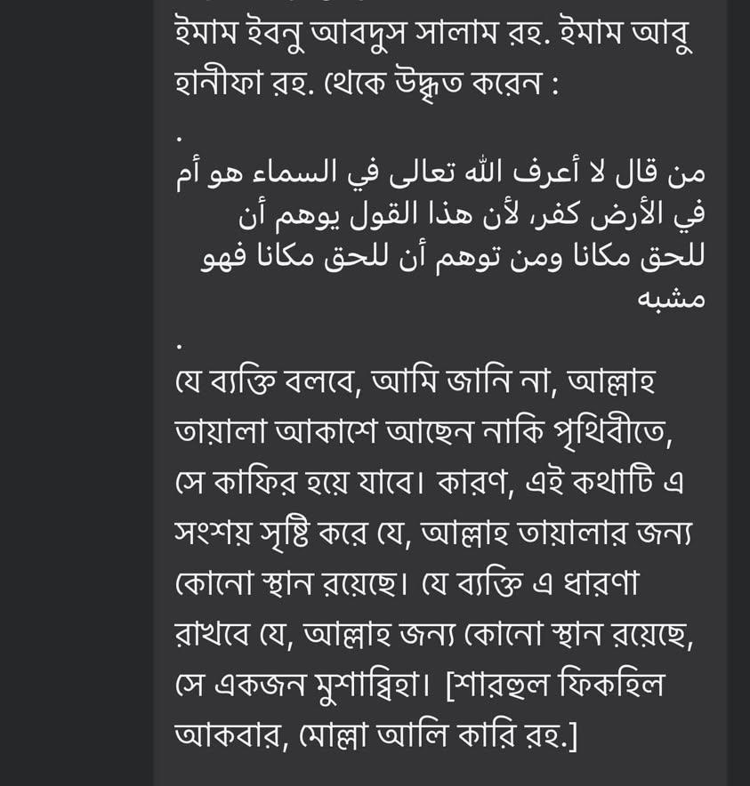

কালামি ভাইরা যদি এ বক্তব্য ইমাম আবু হানিফা রাহ. থেকে প্রমাণ করে দেখাতে পারে, তবে আমি…
১৪ নভেম্বর, ২০২৪
কালামি ভাইরা যদি এ বক্তব্য ইমাম আবু হানিফা রাহ. থেকে প্রমাণ করে দেখাতে পারে, তবে আমি তাদের কালামি আকিদাহ গ্রহণ করে নেব, কথা দিলাম। আর যদি না-পারে, তবে ইমামের নামে এমন জালিয়াতির জন্য আল্লাহর দরবারে নিশ্চয়ই জিজ্ঞাসিত হতে হবে, মাইন্ড ইট।
কালামি ভাইরা যদি এ বক্তব্য ইমাম আবু হানিফা রাহ. থেকে প্রমাণ করে দেখাতে পারে, তবে আমি তাদের কালামি আকিদাহ গ্রহণ করে নেব, কথা দিলাম। আর যদি না-পারে, তবে ইমামের নামে এমন জালিয়াতির জন্য আল্লাহর দরবারে নিশ্চয়ই জিজ্ঞাসিত হতে হবে, মাইন্ড ইট।
